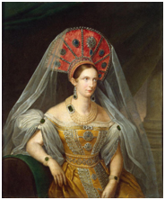

Первые попытки построить систему военного обучения
Император Александр I (1777-1825)
С самого начала своего вступления на престол (март 1801г.) император Александр I начал уделять самое пристальное внимание кадетским корпусам и системе подготовки офицерских кадров в целом. По его распоряжению уже в июне 1801 года была создана «Воинская комиссия для рассмотрения положения войск и устройства оных».
Святелейший князь Зубов П.А. (1767-1822)
В первый же год его царствования князь Платон Зубов, последний фаворит Екатерины II и один из участников заговора против Павла I, с согласия императора подготовил проект закона, в соответствии с которым предполагалось
учредить 17 военных училищ, воспитанники которых получали бы общее начальное образование и затем могли бы продолжить учебу в кадетских корпусах.
К приему в училища предлагалось допускать детей не моложе 7-ми и не старше 10-ти лет. После пятилетнего курса обучения 16 лучших учеников каждого училища подлежали отправлению в столичные корпуса для продолжения образования.Остальных выпускников губернских училищ в соотвествии с проектом предполагалось направлять для продолжения образования в университеты Московский, Казанский, Виленский и Дерпски. Тем не менее, такие училища удалось открыть только в трех городах: в 1801 г. в Туле, в 1802 году в Тамбове и в 1825 г. в Оренбурге.
Тульское училище для воспитания неимущих дворян получило наименование «Александровского». В 1817 г. Александровское Тульское Дворянское училище получило устав, в соответствии с которым стало именоваться военным, и по своему статусу стояло следом за кадетскими корпусами. После смерти Александра I (1825 г.), училище в 1837 г. было переименовано в Александровский Тульский кадетский корпус.
В Тамбове в училище со штатной численностью 120 человек принимали на бесплатное содержание детей беднейших дворян. Воспитанники, окончившие училище с отличием, подлежали переводу в кадетские корпуса или в университет.
Неплюев И.И. (1693-1773)
В Оренбурге военное училище было названо Неплюевским в память бывшего губернатора края, ученика Петра I, адмиралаИ.И.Неплюева, завещавшего десять тысяч рублей на открытие в крае кадетского корпуса. Училище предназначалось для детей офицеров отдельного Оренбургского корпуса. В 1844 г. училище было преобразовано в кадетский корпус.
Александр I предложил дворянству подумать о создании губернских военных училищ на средства дворян. 21 марта 1805 г. появляется разработанный при непосредственном участии императора «План военного воспитания». Военные училища (в некоторых губерниях они получили название дворянских училищ) должны были создаваться теперь уже в каждой губернии, а их выпускники направляться исключительно в кадетские корпуса.
Продолжительность обучения в училищах должно было составлять пять лет, а их выпускники "по слабости здоровья или другим причинам" неспособные к военной службе и продолжению обучения в кадетских копусах, направлялись в университеты.
Пажеский корпус
Великий князь Контантин Павлович (1779-1831)
Несмотря на то, что система военного образования и кадетские корпуса всегда находились под личным контролем императорской семьи, а Генеральным директором Первого кадетского корпуса с 1798 г. и до своей кончины являлся брат императора великий князь Константин Павлович.
Александр I решил создать корпус, который был бы максимально приближен к императору. В результате, 10 октября 1802 г. в Санкт-Петербурге был учрежден Пажеский корпус как отдельное учебно-воспитательное учреждение для детей высокопоставленных и знатных семейств России, которых готовили в свиту Его Императорского Величества и в гвардию.
В его уставе отмечалось: “Пажеский корпус — привилегированное учебное заведение, цель которого – доставить сыновьям заслуженных родителей, предназначенных к офицерской службе преимущественно в войсках гвардии, как общее военное образование, так и соответствующее их предназначению воспитание».
Пажеский корпус стал стал преемником Придворного пансионата, созданного императрицей Елизаветой Петровной. При Екатерине II пансионат был исключительно элитарным учебным заведением. В число пажей могли попасть лишь сыновья и внуки полных генералов от кавалерии, инфантерии и артиллерии. Некоторые исключения делались лишь для отпрысков наиболее знатных русских, грузинских или польских родов.
Воронцовский дворец, в котором располагался Пажеский корпус
В 1810 г. Пажеский корпус(до этого он размещался сначала во дворце адмирала Брюса, а затем в собственном здании при слиянии Зимней канавки и Мойки) был переведен в здание бывшего Воронцовского дворца, где до 1801 г. располагался Капитул Мальтийского ордена, которому покровительствовал Павел I.
Этот факт чисто внешней преемственности получил неожиданное развитие в системе воспитания пажей. Белый мальтийский крест стал его официальным знаком. Заветы мальтийских рыцарей, выбитые на стенах капеллы, были взяты воспитанниками Пажеского корпуса в качестве моральных и этических норм. Они гласили: "Ты будешь верить всему тому, чему учит церковь", "Ты будешь относиться с уважением к слабому и сделаешься его защитником", "Ты будешь любить страну, в которой родился", "Ты не отступишь перед врагом", "Ты будешь вести с неверными постоянную и беспощадную войну", "Ты не будешь лгать и останешься верным данному слову". "Ты будешь щедр и будешь всем благотворить", "Ты везде и повсюду будешь поборником справедливости и добра против несправедливости и зла".
Воспитанники Пажеского корпуса в период обучения считались причисленными к императорскому двору и систематически несли обязанности караульной службы. Большой честью и привилегией считалось возведение пажа в придворный чин камер-пажа. Однако на это могли рассчитывать только лучшие из лучших, отличившиеся в учёбе, поведении и воспитании, а также свободно владеющие иностранными языками.
Камер-паж и паж Пажеского Его Императорского Величества Корпуса
Камер-пажи были прикреплены и несли службу при императрице и великих княгинях во время балов, торжественных обедов, официальных церемоний и других мероприятий, где их присутствие было обязательным по протоколу. Количество камер-пажей варьировалось в зависимости от количества августейших особ и членов императорской семьи.Общий порядок был такой: при императоре — один камер-паж, при каждой императрице (вдовствующей и действующей) — по два камер-пажа, и при каждой из великих княгинь — по одному камер-пажу. Ещё один паж назначался запасным камер-пажом на случай болезни одного из камер-пажей.
Камер-паж Пажеского Его Императорского Величества корпуса. (В парадной форме.) 1857 г.
Пажи по правовому статусу приравнивались к унтер-офицерам гвардии, камер-пажи — к фельдфебелям гвардии, старшие камер-пажи — к подпрапорщикам гвардии.
Учеба и жизнь в Пажеском корпусе
Основыным лицом, отвечавший за учебный процесс в Пажеском корпусе был инспектор классов. Он отвечал за набор учителей и следил за успеваемостью. Офицеры, командиры отделений, имели квартиру для проживания рядом со спальней своего отделения и курглые сутки должны были находиться вместе с пажами. Офицеры должны были знакомиться с семьями воспитаников, посещать и информировать родителей об успехах и недостатках детей. Первого числа каждого месяца офицер-воспитатель подавал рапорт о положении дел в отделении директору корпуса, а тот готовил доклад шефу корпуса.
Шеф Пажеского корпуса, генерал-лейтенант Ф.И. Клингер (1752-1831)
Шефом Пажеского корпуса на протяжении 18 лет был один из авторов его реформирования генерал-лейтенант Ф.И. Клингер
За порядком на территории следила так называемая полиция корпуса, состоявшая из двух унтер-офицеров и швейцара, который был обязан вести строгий учет всех входивших и выходивших из корпуса. Он не имел права выпускать пажей за территорию без разрешающего это “билета”, подписанного офицером. Двери корпуса открывались в 7.30 и закрывались в 22.00.
Самым суровым наказанием для пажей было исключение из корпуса и отправка к родителям или в строевые части. Пажей могли посадить под арест, доложить об их поведении шефу корпуса, а тот – непосредственно императору, который и решал их дальнейшую судьбу. За неоднократное нарушение дисциплины пажи подвергались “строжайшему наказанию”, то есть порке розгами, прямое указание на которые посчитали не этичным. Порка должна была проводиться в присутствии офицеров, воспитанников и директора корпуса.
С 1 сентября в присутствии директора, инспектора классов и всех офицеров в корпусе проводились выпускные экзамены. Присутсовавшие на экзамене выставляли оценки в экзаменационном листе, затем по каждому предмету (а их было немало: языковые дисциплины, математика, история, география, артиллерия, фортификация, физика, механика и т.д.) отдельно подводились итоги, баллы суммировались и каждому выпускнику выставлялась общая отметка. По результатам экзаменов в соответствии с полученными баллами составлялся общий список выпускников, в котором каждый удостаивался своего места.
Мундир камер-пажа на дежурстве.
Император Александр I проявлял большой повседневный интерес ко всему, что происходило в Пажеском корпусе. В декабре 1811 г. он лично экзаменовал пажей и остался доволен проявленными выпускниками знаниями.
Пестель П.И. , руководитель Южного общества декабристов (1793-1826)
Первым в этом выпуске был будущий декабрист П.И. Пестель
Необходимо отметить, что выпускники Пажеского корпуса отличились во всех войнах, которые вел Александр I. В 1807 г. в войне с турками – П.В. Голенищев-Кутузов, под Аустерлицем – Я.А. Потемкин, граф де Больмен, А.С. Кологривов, В.А. Русанов, будущий министр князь А.И. Чернышев, в в 1810 г., во время войны с турками – будущий фельдмаршал князь И.Ф. Паскевич. Еще большее количество выпускников корпуса увенчали себя славой во времяОтечетсвеной войны 1812 г.
Практически все пажи, выступавшие при Александре I как гражданские деятели, проходили военную службу, а большинство из них так и остались военными до конца жизни.
Формирование системы военного обучения
Александр I заложил начало системе управления военно-учебными заведениями России из единого центра, учреждив особый «Совето военно-учебных заведениях» (1805 г.), первейшая задача которого состояла в унификации всей системы воспитания и образования в кадетских корпусах. Создание Совета положило начало деятельности государственного органа, который был обязан координировать составление учебных программ для военно-учебных заведений, выпуск учебных пособий и учебников и осуществлять контроль за качеством преподавания и воспитания в кадетских корпусах. Первым председателем “Совета” был брат императора, великий князь Константин Павлович.
В периодправленияАлександраI (1801-1825), кроме созданного в 1802 г. Пажескогокорпуса, были учреждены Горныйкадетскийкорпус (1804тг.), Финляндскийтопографическийкадетскийкорпус (1812 г.), Калишский кадетский корпус (1815 г.), в Москву переезжает бывший Гродненский (Смоленский) кадетский корпус, получивший с 1824 г. названиеМосковский.В мае 1813 г. учреждено Омское войсковое казачье училище, будущий Сибирский (Омский) кадетский корпус.
Нагрудный жетон Гродненского кадетского корпуса
Перестройка системы кадетского обучения и воспитания при императоре Николае I
Император Николай I (1796-1855)
Вступивший на престол в 1825 г. император Николай I, брат Александра I, внес весьма существенный вклад в создание и развитие кадетских корпусов в России. Он считал, что ко времени его вступления на престол кадетские корпуса уже выполнили свою просветительскую функцию, первоначально возложенную на них при создании, и теперь должны были сосредоточить свое внимание на подготовке исключительно офицеров. Руководствуясь этим, он решил «дать военно-учебным заведениям новое устройство, связать их вместе в одну общую отрасль государственнаго управления, для направления одною и тою же мыслию к одной и той же цели».
На базе проекта по созданию 17 военных училищ, выпускники которых должны были направляться в кадетские корпуса или университеты, предложенном Александру I Платоном Зубовым еще в 1801 г., Николай I принимает решение пойти по пути создания новых кадетских корпусов.
Генерал-инженер К.И. Опперман (1766-1831)
Для разработки нового положения о военно-учебных заведениях по указанию императора 11 мая 1826 г. был образован комитет под председательством инженер-генерала К.И. Оппермана.
На комитет была возложена задача подробно рассмотреть организацию учебного процесса и воспитательной работы в российских военно-учебных заведениях и внести свои предложения по дальнейшему развитию военного образования в России. Результатом четырехлетней работы явился проект «Общего положения и Устава для военно-учебных заведений». По новому положению все военно-учебные заведения делились на три класса. К первому из них были отнесены кадетские корпуса и Дворянский полк, сформированный при Втором кадетском корпусе в 1810 г. Ко второму – Пажеский и столичные 1-й и 2-й кадетские корпуса. К третьему – Морской кадетский корпус и Инженерные и Артиллерийские училища. Цель всех учебных заведений состояла в подготовке сыновей дворян к военной службе.
1 февраля 1830 г. император Николай I утверждает «Положение о губернских Кадетских корпусах», в соответствии с которым кадетские корпуса стали открываться как за счет казны, так и за счет местного дворянства. Первоначально было решено учредить корпуса в Новгороде, Туле, Тамбове, Полоцке, Полтаве и Елизаветграде, каждый на 400 воспитанников. В них могли поступать дети и из близлежащих губерний. При этом было специально определено, какая губерния приписана к тому или иному корпусу.
Генерал от инфантерии К.Ф. Клинкенберг (1772-1849)
Еще до принятия “Положения” по указанию императора в 1829 г. создаются два кадетских корпуса. В феврале появляется Павловский кадетский корпус, в который был переименован Императорский военно-сиротский дом. Первым директоромкорпуса сталгенерал от инфантерии, выпускник Артиллерийского и Инженерного шляхетского корпуса К.Ф. Клингенберг.
В августе 1829 г. на базе благородного пансиона при Александровском лицее и подготовительных классов при 1-м кадетском, Павловском и Морском корпусахучреждается Александровский Малолетний кадетский корпус в Царском Селе, исключительно для детей в возрасте от 7 до 10 лет.

Императрица Александра Федоровна (1798-1860)
Корпус находился под личным покровительством императрицы Александры Федоровны.
Перед корпусом была поставлена цель – готовить малолетних сирот и сыновей заслуженных офицеров дворянского происхождения к поступлению в столичные кадетские корпуса.Большинство воспитанников Александровского кадетского корпуса впоследствии выделялись среди своих сверстников в старших классах кадетских корпусов своими успехами в учебе и строевой выправкой.
Николай I любил посещать Александровский корпус. Часто во время прогулок по Царскосельскому дворцовому парку Николай I приглашал кадет во дворец, и тогда кадеты, не стесняясь, играли с императором, катались вместе с ним с деревянной горки, бегали по саду.
За годы правления Николая I (1825-1855), кроме упомянутых выше, было создано еще 14 кадетских корпусов:Тамбовский кадетский корпус (1830), Тульский Александровский кадетский корпус (1830), Новгородский графа Аракчеева кадетский корпус (1834), Полоцкий кадетский корпус (1835), Петровский Полтавский кадетский корпус (1840), Тульчинский кадетский корпус в г. Тульчине (1841), Александровский Брестский кадетский корпус в Брест-Литовске (1842), Орловский Бахтина кадетский корпус (1843), Михайловский Воронежский Кадетский Корпус (1845), Оренбургский Неплюевский кадетский корпус (1845), 1-й Сибирский императора Александра I кадетский корпус (1845), 2-й Московский кадетский Его Императорского Величества Великого князя Михаила Николаевича корпус (1849), Александринский Сиротский кадетский корпус в Москве (1851), Неранжированный Владимирский Киевский кадетский корпус (1852).
Здание Оренбургского Неплюевского кадетского корпуса
Обучение в кадетских корпусах эпохи Николая I
Великий князь Михаил Павлович (1798-1849)
После кончины великого князя Константина Павловича в 1831 г. Главным начальником военных заведений был назначен великий князь Михаил Павлович, которому был подчинен и Совет о военных учебных заведениях. В 1832 г. для усиления контроля военного ведомства за корпусами создаются Управление военно-учебных заведений и Штаб управления военно-учебными заведениями, позднее преобразованный в Главный штаб. Полномочия его начальника были приравнены к власти министра.
В 1836 г. по указанию великого князя Михаила Павловича вводится единый учебный план для кадетских корпусов. Каждому учебному предмету был определен такой объем, чтобы все предметы, сообразно их важности, составили целостную программу курса. Программа была рассчитана на среднего кадета и подлежала обязательному усвоению.Более 50 учебников для изучения этих программ были составлены известнейшими педагогами того времени.
Для оценки знаний и поведения кадет вводилась единая 12-балльная система.Баллы существенно влияли на судьбу кадета: получившие 8 баллов имели право на получение звания ефрейтора; 9 – младшего унтер-офицера; 10-11 – старшего унтер-офицера; 12 – на выпуск в гвардию.
Все кадетские корпуса того времени представляли собой интернаты со штатной численностью от 100 до 1000 воспитанников, разделенных на роты (гренадерскую, мушкетерскую, неранжированную). Каждая рота состояла из 100-120 кадет приблизительно одного возраста и непосредственно подчинялась ротному командиру. Вновь поступавшие малолетние воспитанники определялись в неранжированную роту.
Михайловский Воронежский Кадетский Корпус
Каждая рота для своего размещения имела: классные комнаты для занятий, рекреационный зал, дортуары (спальни) и другие помещения. На лето кадеты выводились в лагерь и жили в больших палатках, по 50 человек в каждой.
С 1841 по 1862 гг. в кадетских корпусах в целом действовал следующий распорядок дня:
6.00-7.00 — подъем, умывание, одевание, чистка обуви и одежды, молебен;
7.00-8.00 — приготовление уроков;
8.00-11.00 — два урока, между которыми прогулка (30 минут) на чистом воздухев любую погоду, до 10 мороза без шинелей;
Всего в эпоху Николая I в кадетских корпусах воспитывалось до 6700 воспитанников. Ежегодно выпускалось 520 человек. За период с 1825 г. по 1856 г. из кадетских корпусов было выпущено 17 653 офицера.